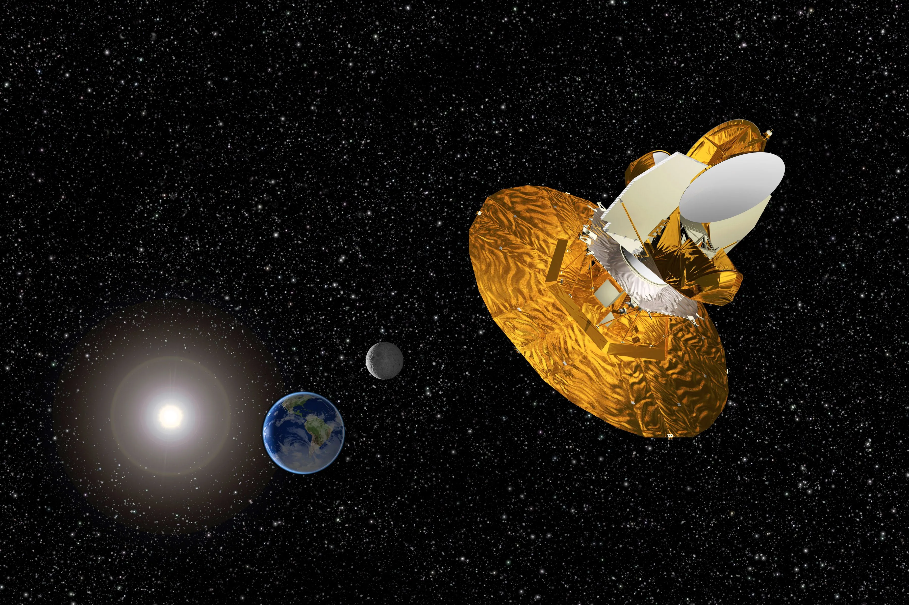
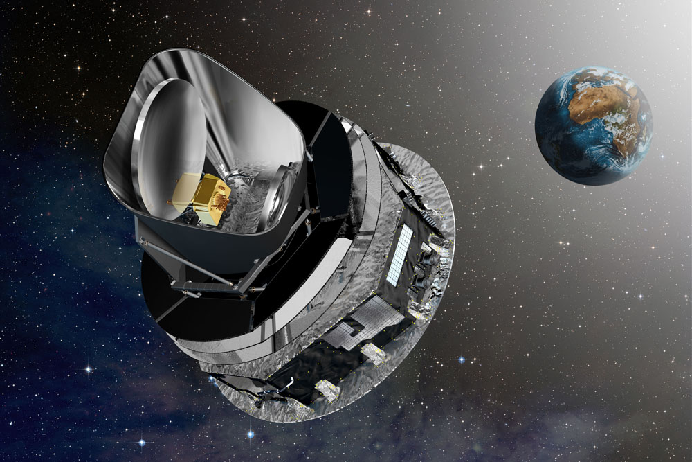
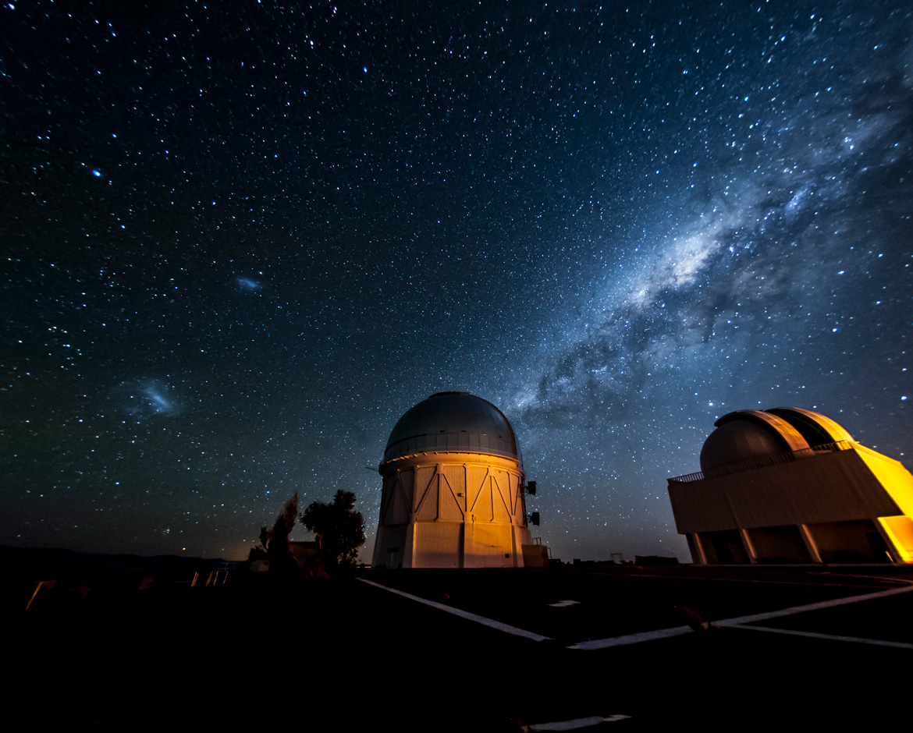
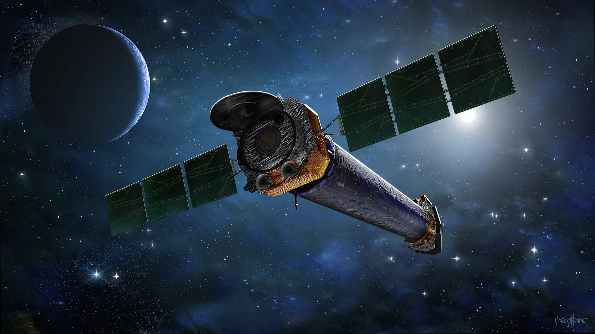

What is Dark Matter?
Dark matter is a type of matter that does not emit, absorb, or reflect light, making it invisible to telescopes. It is detected only through its gravitational effects on visible matter, such as stars and galaxies. Dark matter makes up about 27% of the universe’s mass and energy, playing a crucial role in the formation and structure of cosmic structures.
Why is it essential to learn about Dark Matter?
Dark matter constitutes approximately 27% of the universe's total mass and energy, yet it remains invisible and poorly understood. Learning about dark matter is essential to gaining a comprehensive understanding of the universe’s composition. Without knowledge of dark matter, our models of cosmic structure and evolution would be incomplete. Unraveling its nature would help scientists develop a more accurate picture of the universe's fundamental makeup and address one of the most significant gaps in modern physics.
Dark matter plays a pivotal role in the formation and structure of galaxies and galaxy clusters. Its gravitational effects shape the distribution of visible matter and influence the dynamics of celestial objects. By studying dark matter, researchers can better understand the processes that lead to the formation of galaxies, the behavior of galaxy clusters, and the overall structure of the cosmos. This knowledge is crucial for understanding the large-scale architecture of the universe and the evolution of cosmic structures over time.
Investigating dark matter can potentially reveal new physics beyond the Standard Model. While its gravitational effects are well-documented, its exact nature remains unknown. Dark matter could consist of new, undiscovered particles or interactions that could expand our understanding of fundamental forces and particles. Research into dark matter not only helps address a key question in cosmology but also opens the door to new discoveries in particle physics and could lead to breakthroughs that reshape our understanding of the laws governing the universe.
Characteristics of Dark Matter
Invisible and Non-interacting
Dark matter does not emit, absorb, or reflect electromagnetic radiation (such as light), making it invisible to telescopes and other instruments that rely on electromagnetic signals. This lack of interaction with light means it cannot be observed directly.
Gravitational Influence
Despite being invisible, dark matter exerts a significant gravitational pull on visible matter. Its presence is inferred through the gravitational effects it has on the motion of stars, galaxies, and galaxy clusters. For example, the rotation curves of galaxies and the motion of galaxies within clusters suggest the presence of unseen mass.
Non-Baryonic Composition
Unlike ordinary matter, which is composed of baryons (such as protons and neutrons), dark matter is thought to be non-baryonic. This means it is not made up of the same particles that form atoms and molecules in the visible universe.
Stable and Persistent
Dark matter is believed to be stable over cosmic timescales. Unlike ordinary matter, which can be transformed or decayed, dark matter does not easily change or dissipate, making it a persistent component of the universe.
Clustered Distribution
Dark matter is not uniformly distributed throughout the universe. It tends to cluster around galaxies and galaxy clusters, influencing the formation and evolution of these structures. Its distribution affects the large-scale structure of the cosmos, helping to shape the formation of galaxies and clusters.
Lack of Interaction Beyond Gravity
Dark matter interacts with ordinary matter primarily through gravity, and possibly through weak interactions, but not through the electromagnetic force. This lack of interaction beyond gravity helps explain why it is so difficult to detect directly.
Theoretical Types of Dark Matter
Weakly Interacting Massive Particles (WIMPs)
WIMPs are among the most widely studied candidates for dark matter. They are predicted to be heavy particles that interact via the weak nuclear force and gravity but not through electromagnetism. Their theoretical properties make them a prime target for direct detection experiments, which aim to observe these particles interacting with normal matter. Despite extensive search efforts, WIMPs have yet to be directly detected.
Axions
Axions are hypothetical particles proposed as a solution to the strong CP problem in quantum chromodynamics (QCD). They are extremely light and interact very weakly with other particles. Axions are considered a viable dark matter candidate due to their potential to make up a significant portion of the universe’s dark matter. Experiments are underway to detect axions through their interaction with electromagnetic fields.
Sterile Neutrinos
Sterile neutrinos are a type of hypothetical neutrino that does not interact via the weak force like regular neutrinos but could interact through gravity. They are heavier than regular neutrinos and could account for some or all of dark matter. Their detection is challenging, but observations of galaxy formation and cosmic microwave background radiation provide indirect evidence for their potential existence.
Supersymmetry Particles
Supersymmetry (SUSY) is a theoretical framework that extends the Standard Model of particle physics. SUSY predicts the existence of partner particles for every known particle. Among these, certain supersymmetric particles, such as the neutralino, are considered dark matter candidates. These particles are predicted to have properties that make them suitable for dark matter, though direct detection remains elusive.
What is dark energy?
Dark energy is a mysterious and poorly understood form of energy that is thought to make up approximately 68% of the universe. Unlike dark matter, which exerts gravitational effects, dark energy is theorized to have a repulsive effect, causing the accelerated expansion of the universe. Its presence was inferred from observations of distant supernovae and the cosmic microwave background radiation, which revealed that the rate of expansion of the universe is increasing rather than slowing down as previously expected. Dark energy is a central component of current cosmological models and plays a crucial role in understanding the large-scale structure and fate of the universe.
Why is it essential to learn about dark energy?
Dark energy is fundamentally linked to the accelerated expansion of the universe. By studying it, scientists can better comprehend how and why the universe's expansion rate is increasing. This knowledge is essential for developing accurate models of the universe's evolution and ultimate fate. It helps us answer fundamental questions about the nature of the universe and its long-term trajectory.
Dark energy makes up about 68% of the universe, yet its nature remains one of the biggest mysteries in cosmology. Learning about dark energy is key to understanding the composition of the universe and its large-scale structure. It challenges our current understanding of physics and may lead to new theories or modifications of existing ones. This could revolutionize our understanding of fundamental forces and particles.
Dark energy influences various aspects of astrophysics and cosmology, including galaxy formation, the large-scale structure of the cosmos, and the behavior of cosmic phenomena. Research into dark energy drives technological advancements and new observational techniques. It spurs the development of new experiments and instruments, which can lead to breakthroughs in other areas of science and technology.
Characteristics of Dark Energy
Dark energy is not directly observable, as it does not emit, absorb, or reflect light. Its existence is inferred from its gravitational effects on the large-scale structure of the universe. It remains one of the greatest mysteries in cosmology because its exact nature and origin are unknown.
Dark energy is believed to be responsible for the accelerated expansion of the universe. Observations, particularly of distant supernovae and the cosmic microwave background, show that the rate at which the universe is expanding has been increasing over time. Dark energy is thought to be driving this acceleration.
Unlike matter and radiation, which are distributed unevenly throughout the universe, dark energy is thought to be evenly distributed across space. This means it has the same density everywhere, and its effects are uniform, contributing to the uniform expansion of the universe.
One theory proposes that dark energy is related to the cosmological constant, a concept introduced by Albert Einstein in his theory of General Relativity. The cosmological constant represents a constant energy density filling space homogeneously. This constant would contribute to the repulsive force driving the universe’s accelerated expansion.
Dark energy constitutes about 68% of the total energy content of the universe. This makes it the largest component of the universe, outnumbering dark matter and ordinary matter combined. Its influence on cosmic dynamics is profound, shaping the universe's large-scale structure and its future evolution.
Types of Dark Energy
Since dark energy is a concept that refers to a mysterious force driving the accelerated expansion of the universe. As of now, there are no distinct "types" of dark energy in the way we categorize matter or energy forms. Instead, there are different theoretical models and interpretations of what dark energy might be.
Cosmological Constant (Λ)
This model, introduced by Albert Einstein, posits that dark energy is a constant energy density filling space homogeneously. The cosmological constant is considered to be a fixed value throughout space and time, acting as a repulsive force that drives the accelerated expansion of the universe. It is a central component of the ΛCDM model, which is the standard model of cosmology.
Quintessence
This theory suggests that dark energy is not constant but varies over time and space. Quintessence proposes that dark energy is a dynamic field that evolves, unlike the cosmological constant, which remains constant. This field is characterized by an energy density that changes over time, leading to different rates of cosmic acceleration at different epochs.
Modified Gravity Theories
Some theories suggest that what we perceive as dark energy could actually be a result of modifications to our understanding of gravity. These models propose alterations to Einstein's General Relativity, such as extra dimensions or changes to the gravitational force on cosmic scales, which could account for the observed acceleration of the universe's expansion.
Scalar Field Models
These models propose that dark energy is related to a scalar field—a field characterized by a single value at every point in space. The scalar field would evolve over time and affect the expansion rate of the universe. The properties of this field could vary, and it could have different influences on cosmic expansion.
Explorations and Missions
Wilkinson Microwave Anisotropy Probe (WMAP) (2001-2010)
The WMAP mission, launched by NASA, was crucial in mapping the cosmic microwave background (CMB) radiation with high precision. By analyzing the temperature fluctuations in the CMB, WMAP provided critical data on the composition of the universe, including the proportions of dark matter and dark energy. The mission's findings supported the ΛCDM model, which includes both dark matter and dark energy, and offered insights into the universe's age, structure, and expansion rate.
Planck Satellite (2009-2013)
The European Space Agency's Planck mission followed in WMAP's footsteps by providing an even more detailed map of the cosmic microwave background. Planck's data allowed scientists to refine measurements of the universe's age, its rate of expansion, and the relative amounts of dark matter and dark energy. The mission's results have been essential for improving our understanding of the universe's fundamental properties and the roles of dark matter and dark energy.
Dark Energy Survey (DES) (2013-Present)
The Dark Energy Survey is an ongoing observational project aimed at studying dark energy and its effects on the expansion of the universe. Using the Dark Energy Camera, the survey examines millions of galaxies, supernovae, and galaxy clusters to measure cosmic acceleration and map the distribution of dark energy. The data collected helps refine our understanding of how dark energy influences the universe's expansion.
Chandra X-ray Observatory (1999-Present)
Although primarily focused on X-ray astronomy, the Chandra Observatory has contributed valuable information about dark matter through its observations of galaxy clusters. By studying the distribution of hot gas in these clusters, Chandra helps scientists infer the presence and distribution of dark matter, as the gravitational effects of dark matter influence the cluster's structure and behavior.
Facts about Dark Energy and Dark Matter
Dark matter plays a crucial role in the formation of galaxies. Although it does not emit or interact with electromagnetic radiation like ordinary matter, dark matter's gravitational influence helps pull ordinary matter together, forming the dense regions where galaxies can form. Without dark matter, the structures we see in the universe today might never have come into existence.
Dark energy is believed to be responsible for the accelerated expansion of the universe. This discovery, made in 1998 through observations of distant supernovae, showed that the expansion rate of the universe is increasing, contrary to earlier expectations of a decelerating expansion. Dark energy is thought to counteract the effects of gravity on cosmic scales, leading to this acceleration.
Despite its significant role in the universe, dark matter has never been directly detected. Scientists have been unable to observe it using conventional telescopes or detectors because it does not interact with light or other forms of electromagnetic radiation. Instead, dark matter is inferred from its gravitational effects on visible matter, such as stars and galaxies.
Dark energy constitutes approximately 68% of the universe's total energy content, making it the dominant component. This contrasts sharply with dark matter, which makes up about 27%, and ordinary matter (the stuff that makes up stars, planets, and living things), which constitutes only about 5%. The overwhelming presence of dark energy has profound implications for the future evolution of the universe.
There are several theoretical candidates for what dark matter might be, but none have been confirmed yet. Some of the leading candidates include Weakly Interacting Massive Particles (WIMPs) and axions. These hypothetical particles are predicted to interact only very weakly with ordinary matter, making them extremely difficult to detect with current technology. Research into dark matter particles continues in the hope of discovering their true nature.
Quiz
1. How did the Hubble Deep Field observation in 1995 change our understanding of the universe?
2. Describe one contribution of ancient Babylonians to early astronomy.
3. Explain the impact of the Islamic Golden Age on the development of astronomy during the medieval period.
4. How did the heliocentric model proposed by Copernicus revolutionize our understanding of the solar system?
5. What are some of the key research areas in contemporary astronomy, and why are they significant?